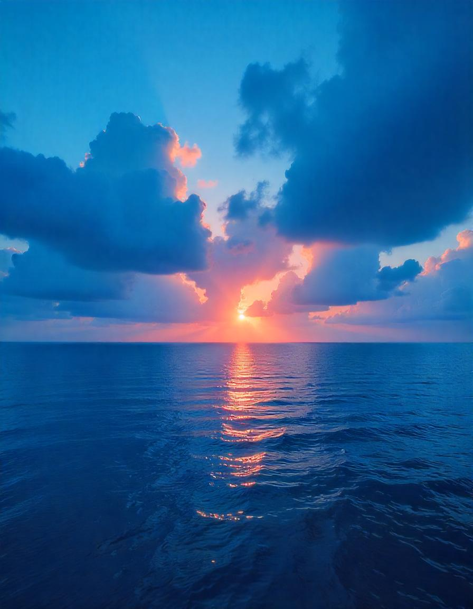

A Magia do Pôr do Sol
O pôr do sol é um dos espetáculos mais belos da natureza. Cada dia, o céu se transforma em uma tela onde as cores dançam em harmonia, criando paisagens únicas e memoráveis!
Neste blog, exploraremos a beleza e o significado por trás desse fenômeno natural, compartilhando histórias, fotos e reflexões sobre como o pôr do sol pode inspirar nossas vidas.